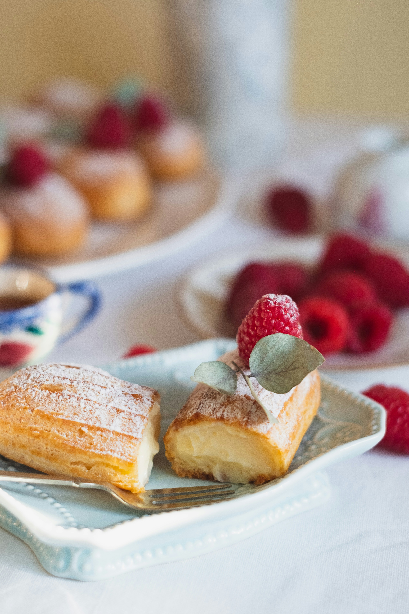

About Us
At Parisian Patisserie, we invite you to experience the flavours of Paris in every bite. Our journey began with a passion for crafting desserts that capture a feeling of elegance and sophistication. Each menu item is meticulously handcrafted by our team of expert pastry chefs, who draw inspiration from the rich culinary traditions of Paris. From classic French macarons to indulgent cakes and delicate pastries.


